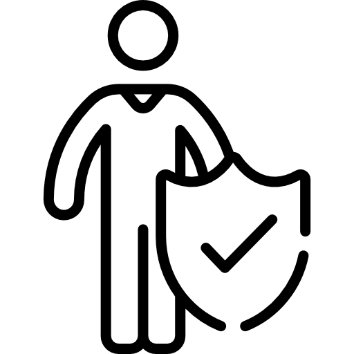

I am Hugo Aerts, a professor, scientist, and builder working to create a future where artificial intelligence helps us better understand, prevent, and treat disease.


I am Hugo Aerts, a professor, scientist, and builder working to create a future where artificial intelligence helps us better understand, prevent, and treat disease.
We are at a unique moment in history. Artificial intelligence has demonstrated extraordinary potential, yet meaningful transformation of healthcare remains limited. The challenge is not only to build larger models, but also to use these technologies to generate new biological insights, rigorously validate discoveries, and translate them into clinical practice.
My mission is to bridge that gap. By combining artificial intelligence, medicine, and scientific discovery, I work to uncover hidden signals in human biology — signals that can change how we understand aging, cancer, and disease. The goal is not simply to extend lifespan, but to extend healthy years of life.

My name is Hugo Aerts (pronounced "arts") — a professor, scientist, and builder dedicated to improving human health through scientific discovery and artificial intelligence.
Over the past two decades, my work has focused on uncovering biological signals hidden within medical data. This research has contributed to the development of foundation models for medicine, and led to new insights into aging, cancer, and immune health. More recently, my team has challenged long-standing assumptions about the adult thymus, revealing its important role in longevity, cancer risk, and treatment response.
I serve as Professor at Harvard University, Director of the AI in Medicine Program at Mass General Brigham, and Adjunct Professor at Maastricht University, where I lead multidisciplinary teams of scientists, clinicians, and engineers working at the intersection of artificial intelligence, medicine, and biology.
My research is supported by major NIH-funded initiatives, and I was awarded a prestigious ERC Consolidator Grant from the European Union's Horizon program. Since 2022, I have been recognised by Web of Science as among the top 1% most-cited scientists worldwide.
Originally from the Netherlands and now based in Boston, I also advise and co-found ventures at the intersection of AI and medicine — and remain inspired by the possibility that the work we do today can meaningfully change the lives of patients tomorrow.
| hugo@hugoaerts.com | |
| Lab | aim.mgh.harvard.edu |
| Harvard | AI in Medicine (AIM) Program Mass General Brigham 75 Francis St, Boston MA 02115 |
| Maastricht | Maastricht University P.O. Box 616, 6200 MD The Netherlands |
| Scholar | Google Scholar — 80k+ citations |
| PubMed | PubMed publications |
| ORCID | 0000-0002-2122-2003 |
| Harvard | Harvard Profiles |
| @hugoaerts | |
| linkedin.com/in/hugoaerts |